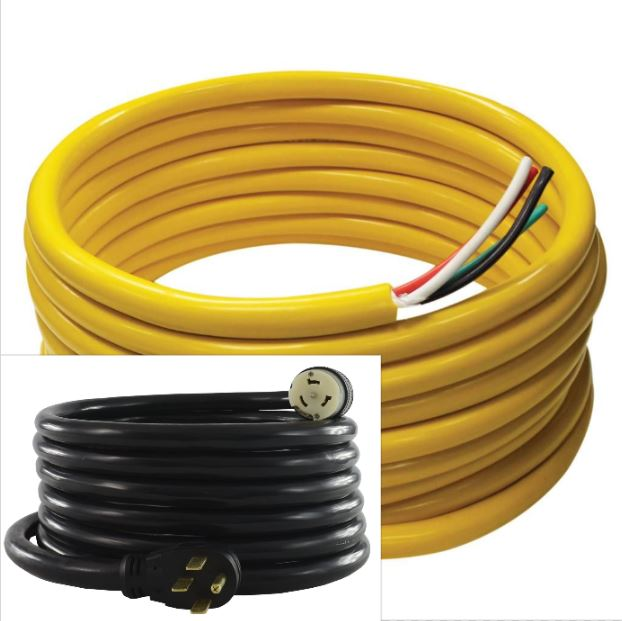

What size wire for 50 amp Rv service?
You should use the No. 4 AWG size for a 50 amp wire. This is the best size wire for 50 amp Rv service. Whether you have a 30 amp, 40 amp or a 50 amp breaker, wire size is essential. Before you take on any type of wiring job, be sure to know the exact size wire you need.
What is gauge and AWG
Gauge is the measurement of a wire, particularly its size. AWG is the standard system used for this measurement. Wire gauge is determined from high to low with greater numbers suggesting a smaller sized wire size.
Accurate wire sizing is necessary for a breaker as it assists in figuring out just how much of a electrical current can pass through it safely and just how much resistance it will have.
Please keep in mind that the details within this short blog post is just a simple look on the basic standards.
For any concerns that you may have, seek advice from a electrical contractor that is licensed and certified, along with your regional electrical codes.
The table below will inform you on what wire size is required for the amount of power that will be going through the line when using either copper or aluminum
What are the different Wire Sizes & Amp Ratings
| Copper | Aluminum | ||||
|---|---|---|---|---|---|
| Wire Gauge Size | 60°C (140°F) | 75°C (167°F) | 90°C (194°F) | 75°C (167°F) | 90°C (194°F) |
| 14 | 15 | 20 | 25 | --- | --- |
| 12 | 20 | 25 | 30 | 20 | 25 |
| 10 | 30 | 35 | 40 | 30 | 35 |
| 8 | 40 | 50 | 55 | 40 | 45 |
| 6 | 55 | 65 | 75 | 50 | 55 |
| 4 | 70 | 85 | 95 | 65 | 75 |
| 3 | 85 | 100 | 115 | 75 | 85 |
| 2 | 95 | 115 | 130 | 90 | 100 |
| 1 | --- | 130 | 145 | 100 | 115 |
| 1/0 | --- | 150 | 170 | 120 | 135 |
| 2/0 | --- | 175 | 195 | 135 | 150 |
| 3/0 | --- | 200 | 225 | 155 | 175 |
| 4/0 | --- | 230 | 260 | 180 | 205 |
| 250 | --- | 255 | 290 | 205 | 230 |
| 300 | --- | 285 | 320 | 230 | 260 |
| 350 | --- | 310 | 350 | 250 | 280 |
| 500 | --- | 380 | 430 | 310 | 350 |
| 600 | --- | 420 | 475 | 340 | 385 |
| 750 | --- | 475 | 535 | 385 | 435 |
| 1000 | --- | 545 | 615 | 445 | 500 |
30 Amp Rv Plug VS 50 amp Plug
A 30 amp rv plug is different than a 50 amp rv plug. Below you will see the difference between both.

How many electrical systems are in an rv?
An rv consist of 2 electrical systems that we all need to know about. The first one is the 120-volt system which is used to power larger electrical home appliances such as your tv and your kitchen area appliances that use up more electrical energy. The essential thing is to always remember what size wire for 50 amp Rv service.
Secondly, there is a 12-volt system which is powered by a 12-volt battery. This can power home appliances such as Rvs electrical plug or by a generator.
Some of the best 50 amp plugs for rv and wires you can buy today
If you have a project coming up and you are in need of a 50 amp wire, here are a few that will be perfect.
Conntek 14302 RV/Generator Power Cord 30-Foot 50 Amp Male Plug to Bare Wire
Camco PowerGrip Replacement Plug (55255)
4 Gauge 4 AWG 10 Feet Black + 10 Feet Red Wire

This product has a 5 star rating on amazon from 652 different buyers at the time of writing this review.
| Brand | Conntek |
|---|---|
| Manufacturer | Conntek |
| Model | FBA_14302 |
| Product Dimensions | 15 x 15 x 5 inches |
| Item model number | 14302 |
| Item Weight | 21.8 pounds |
| Discontinued By Manufacturer? | No |
| Part Number (Manufacturer) | FBA_14302 |

This comes in at less than 20 dollars and transforms your rv plug into a durable and safe PowerGrip Cord. It has high conductivity and a sleek, compact design. Very easy to install.

This wire is fully annealed copper wire and meets the ASTM standards. Get this wire for all the small projects you have that require a 4 gauge wire. This wire is able to handle up to 600v and roughly -58°F up to +221°F
Aspects to consider when choosing wire size
- Length of the wire
- Type of wire material
The best option when figuring out what size wire to use at certain lengths is to consult a professional and get their input on the job you are about to partake. However, rule of thumb is to go up one size larger than your job requirement if your wire is inside a conduit, ganged with other wires which inhibits heat dissipation, or your run exceeds 100 100 feet.
If you are utilizing a wire that is not made from brass, silver or copper, it would be best to check and see if a different size is required. Aluminum wires are known to be much less common than ones made with copper, and they likewise differ from them in certain requirements. Aluminum uses roughly 61% of the conductivity of copper wires.They however weigh 70% less than copper wires.
50 amp Aluminum Wire
Aluminum wires are ranked in a different way than copper wires are. For a 50 amp aluminum wire, you should use the No. 4 AWG. The smaller sized the number on the wire is, the larger the wire size. For instance No. 4 is larger in size than the No. 6. Aluminum wires are available in various types. Types RHW and THWN are the most typically utilized ones. No. 6 is only usefully good up to 40-amp.
50 amp Copper Wire
For copper wire, No. 8 or No. 6 THWN should be used. No. 6 copper wire can support approximately 55-amp at a temperature level of around 60 degree Celsius. No. 6 wire is highly suggested. It's always best if a larger size wire is utilized..
What is Voltage Drop
Wires bring current constantly have fundamental impedance, or resistance to the existing current flow. Voltage drop is specified as the quantity of voltage loss that happens through part or all of a circuit due to impedance.
A typical example that is usually used to discuss voltage, existing and voltage drop is a garden hose pipe. Voltage is comparable to the water pressure provided to the hose pipe. Current is comparable to the water streaming through the water hose. And the fundamental resistance of the pipe is figured out by the type and size of the tube - similar to the type and size of an electrical wire identifies its resistance.
Extreme voltage drop in a circuit can trigger flickering of lights or they will burn poorly, cause heating units to heat improperly, and motors will run hotter than regular and stress out. This condition triggers the load in a way that they have to work with less voltage pushing the current and work harder.
Three percent of 115 volts is 3.5 volts if the circuit voltage is calculated at 115 volts. This indicates that voltage that is lost from the wires in a circuit shouldn't surpass 3.5 volts. The outlet must still have 111.5 volts or 115 - 3.5 to be supplied at all times. Most appliances or devices need an extension cable to plug into some sort of outlet, some voltage drop will take place in the extension cable too. Some motors will definitely not run properly, and might even burn up, if the voltage at the motor is allowed to fall too low.
WIRE SIZE AMPACITY CHART
| Gauge | Amperage |
|---|---|
| 2-gauge wire | 95 amps |
| 3-gauge wire | 85 amps |
| 4-gauge wire | 70 amps |
| 6-gauge wire | 55 amps |
| 8-gauge wire | 40 amps |
| 10-gauge wire | 30 amps |
| 12-gauge wire | 20 amps |
| 14-gauge wire | 15 amps |
60 amp wire size
The best wire to use for 60 amps is to use a wire gauge of 4. There are however some cases where a 6 gauge wire will be sufficient.
50 AMP WIRE SIZE
To use a maximum of 50 amps, you will need a wire gauge of 4. There are some electronic devices in our household that require only a maximum of 40 amps. However, there are some appliances that will need 50 amps, such as a washer or dryer. You can sometimes even use a wire size of 6 for 50 amps but the smaller the number on the gauge scale is the better. This is because the lower the number on the gauge scale is, the thicker and more durable the wire is. This is especially true if you plan on running the wire for more than 100 feet.
40 AMP WIRE SIZE
To safely use a maximum of 40 amps, you will need a wire gauge of 8. This will allow you to safely use items in your house such as an electric cooktop.
30 AMP WIRE SIZE
To use a maximum of 30 amps, you should use 10 gauge wire.
What happens if you use the wrong wire size for 50 amp rv service?
It is exceptionally harmful for anyone to try and use a wire that has a smaller sized gauge than required. The wire might melt and get too hot. This might result in breaker or home appliance damage and be a high fire risk.
If you use a wire that has a bigger gauge than required, there will be close to zero percent chance of something going wrong. It can be a hassle, given that a bigger wire is normally much heavier and stiffer, however it will not cause any prospective dangers.
Solid Wire vs Stranded Wire

Another thing to remember is to pick the design of wire that will best fit your requirements. Some wires are made up of solid copper conductor while some other wires are stranded. In setups utilizing some sort of metal conduit, the solid wire does not easily pull as quickly if the channel has a great deal of bends. However, solid wire is generally simpler to be secured under screw terminals. these screw terminals can usually be found on basic switches and receptacles. 14, 12, or 10-gauge wire that is a great copper conductor and is usually the best choice for residential circuits.
Some basic uses of wires in everyday life
| Wire Use | Rated Amperage | Wire Gauge |
|---|---|---|
| Lamp cords and Low-voltage lighting | 10 amps | 18-gauge |
| Light duty Extension cords | 13 amps | 16-gauge |
| Light fixtures, lamps, lighting circuits | 15 amps | 14-gauge |
| Outdoor receptacles (outlets), Kitchen, bathroom, 120-volt air conditioners | 20 amps | 12-gauge |
| 240-volt window air conditioners, Electric clothes dryers, electric water heaters | 30 amps | 10-gauge |
| Ranges and Cooktops | 40-50 amps | 6-gauge |
| Large electric heaters, Electric furnaces | 60 amps | 4-gauge |
What if you want to install your own 50 amp service in your home?

It is not hard to install your own 50 amp service in your home if you know what you are doing and with the right directions to help you along. Below i will list all the materials and tools needed and a step by step guide to complete the job.
Things you need to install a 50 amp service in your home
- Voltage meter
- 50-amp fuse
- Electrical tools kit
- RV pedestal hookup
- UF-rated 6 gauge 4-conductor wire
- Plastic zip ties
- 50-amp outlet (optional)
How to install a 50 amp RV outlet at home
- Disconnect your breaker panel. The supply to your breaker board will likely be split in something known as single phase. Single phase simply means that there is a single ground connection and a neutral connection along with two hot wires that serve your breaker.
- Test your wires - Pull the wires then link them all to your panel. This is the outdoors receptacle. Then, install your 50 amp breaker (double-pole) into the sub-service box. Please bear in mind the different colors of wires. This will help you in identifying the place and the placement of the wires.
- Different colors- Can you locate the red wire? You will need to attach it to a breaker terminal that is located on the outlet side. After attaching that, continue to the black wire. Try to find the other terminal, which lies in the outlet location of the breaker. The white wire needs to be attached to a neutral bus-bar. Next comes the green wire, this is the bare one and ought to be attached to the grounding block.
- Final steps - The half-round receiver is the green one. Prior to covering up your last connections, be sure to wire your receiver to the opposite of the green one (half-round receiver). The terminal screw is the white-colored-one. You are required to attach the the Y configuration to the red wire and to a single screw. On the opposite side of the breaker, attach the X configuration to the black wire. This is the very same for the other single screw on the breaker. Remember that Y and X are interchangeable.
- Test Test Test - Turn the lever into the "on" position for the main breaker. Next, you need to switch on the double-pole breaker. This ought to work as your brand-new 50 amp outlet. To read your output, place your probes on the neutral receiver and one on the hot receiver. The reading you should get is 240 volts. Be sure that you check more than once that the output is showing 240 volts, particularly after experimenting with the voltage meter. After testing it more than once, test it on your rv.
Can 6 gauge wire handle 50 amps?

Yes, a 6 gauge wire can definitely handle 50 amps. A 6 gauge wire will handle amperage all the way up to 55. You will find that most appliances use a 50 amp breaker.
Can 8 gauge wire handle 50 amps?

No, 8 AWG may be used to handle up to 40 amps. A 8 AWG wire can handle up to 70 amps in free air.
Can 10 gauge wire handle 50 amps?

No, a 10 gauge wire can handle up to 30 amps.
What size wire for 50 amps at 150 feet
To run 50 amps at 150 feet, you can use No. 4 AWG. The larger the wire diameter is defined by the smaller numbers on a wire.
What exactly is an electrical range?
An electrical range is has do do with appliances such as in a kitchen where a stove needs electricity to operate. Electric current is converted into heat which in turn provides a means for cooking.
So what wire size for 50 amp range?
This all depends on the type of appliance. However, most ranges require a 50 amp 240-volt circuit that is wired with a 6 gauge wire. A 4 gauge wire will be best if the current will be travelling longer distances.
Safety Precautions When Working With Electricity
When handling electricity, say for instance, you're wiring an rv outlet, you need to take certain precautions into consideration. Here are a few precautions you need to take in order to stay safe and out of harms way.
- Use electrical gloves, these types of gloves are needed when operating in low and high voltage applications to safeguard employees from burns, shocks, fires and certain types of explosions. These gloves are checked certified according to the ASTM F496 safety requirements.
- If you are dealing with any type of receptacle at your house then be sure to switch off the mains. It is likewise a great idea to install an indicator or sign on the circuit box/service panel. This should stop people from mistakenly turning the main switch on.
- Avoid having any type of liquid close by as electricity and liquids do not play nice together.
- Use insulated tools while working with electricity.
- Never ever attempt fixing energized devices. Constantly inspect that it is de-energized initially by using a tester. When an electrical tester touches a hot or live wire, the light bulb inside the tester brightens revealing that an electric current is streaming via the corresponding wire. Examine all the cables, the external metal covering of a service panel and also any type of various other hanging cables with an electric tester prior to starting your job.
- Do not use any steel or aluminium ladder if you are working with any kind of receptacle in your house or anywhere else. An electric current will certainly ground you and certainly go through your body. Instead, use of a bamboo, wood, or a fiberglass ladder.
Answer from Quora
Lewis Edge has a B.S. Electrical Engineering, from the Georgia Institute of Technology (1964) and is well knowledgeable in the field.
If every RV with a 50-amp plug actually used anywhere near 50-amperes per leg of the 240 volt connection, then #4 wire would be recommended to minimize voltage drop. However, the reality is that all but the largest all-electric motorhomes use far less than 50-amps. My motorhome is a fully-equipped 35-foot long Winnebago Itasca with two rooftop air conditioners. The range is gas. The refrigerator can run on either gas or electricity. All of the overhead lighting is supplied by 12-volt LEDs. The water heater can run on either gas or electricity or both. Even with every electric appliance in our coach running at full tilt, our motorhome does not use enough current to trip a 30-amp, two-pole, 240-volt breaker. While traveling through western Canada we found many campgrounds that had no electrical connections greater than 30-amps at 120 volts. Just turning off one of our rooftop air conditioners was enough enable us to power everything else with such a connection. Before investing in #4 four-conductor copper wire for a 60-foot run, which would be not only expensive, but cumbersome and heavy, I would suggest using an ammeter to measure how much current (amperage) the RV requires. We can run our motorhome just fine with sixty feet of #10/4 wire without a significant voltage drop. Just make sure that there is a 30-amp breaker to protect the wire. Otherwise, you’ll need to use #6/4 copper wire with a 50-amp breaker.
So what size wire for 30 amps?
You should use the No. 10 AWG size for a 30 amp wire. This is a safe place to start.
Conclusion
So what size wire for 50 amp rv service? The best size for 50 amp rv service is 4 AWG. It is extremely necessary to know the right size wire for anything you are doing as this will keep everyone safe. Nobody wants to start a wiring job and then a fire starts that could have been avoided by just using the right size wire.